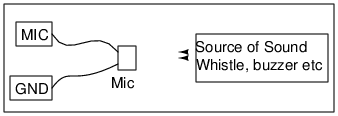

<h2 id="schematic">Schematic</h2>
<hr>
<p></p>
<h2 id="instructions">Instructions</h2>
<hr>
<ul>
<li>Make connections. Enable the channel MIC.</li>
<li>Make sound using instruments like flute, or a whistle.</li>
<li>Adjust the time base to view clear traces.</li>
<li>Use FFT to do a frequency analysis.</li>
</ul>